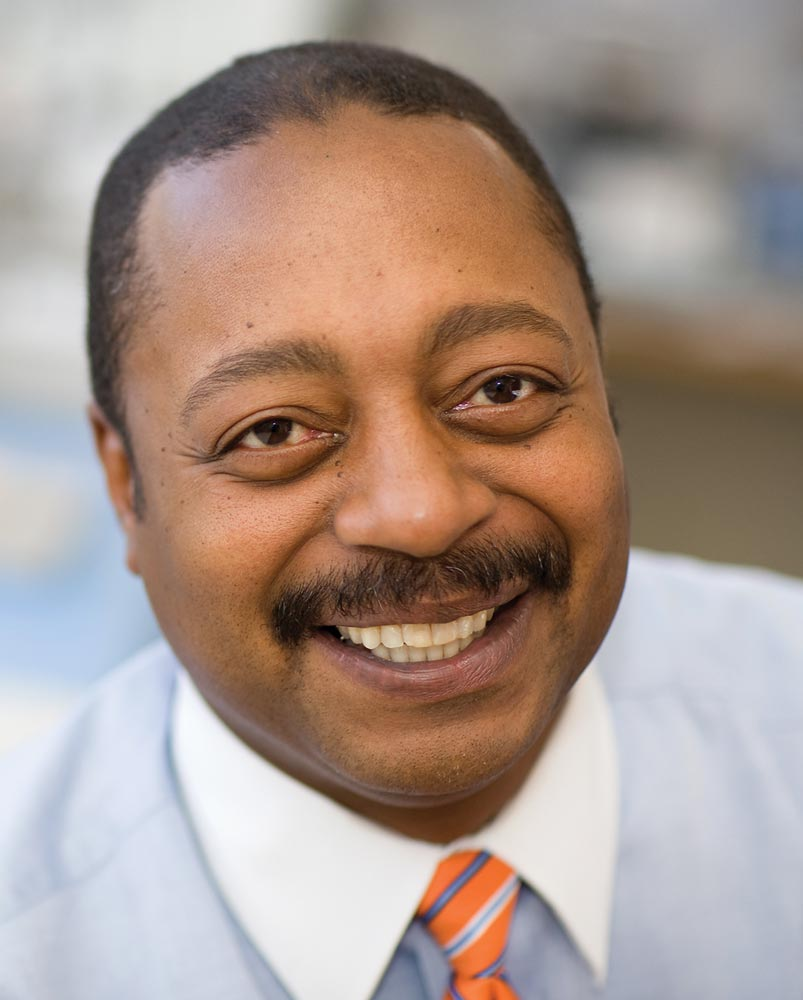

Dr. Williams is a Professor in the Neuroscience and Behavior Division of the Psychology deptartment at the University of Virginia. Dr. Williams received a B.A. degree in Psychology from N.C. A & T Univ., a Ph.D. in Physiological Psychology from S. Illinois Univ. and served as a post doc researcher at the Center for the Neurobiology of Learning and Memory at the Univ. of California-Irvine. He joined the Univ. of Virginia in 1995 and served as the Dir. of the Graduate Program in Psychology (2002-2008), chairman of the Committee for Faculty Rules, representative for the Faculty Senate, member of the Postdoc Advisory Council and served on the Professional Dev. Comm. for the Society for Neuroscience. Dr. Williams has served as a grant review panel member for NIH, NSF, Dept. of Defense and Veterans Admin. for over
15 years in addition to holding the position of Program Director at the National Science Foundation’s Neural Systems cluster in the Directorate of Biological Sciences (2009-2011). He has received the Alumni Achievement Award from APA’s Diversity in Neuroscience Program, the Director’s Achievement Award for Broadening Participation in the sciences from NSF and funded his research by awards from NIH, NSF and the Dept. of Defense.To view Professor Williams' CV in full, click here.